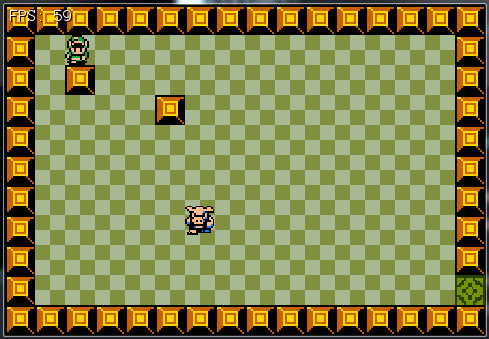
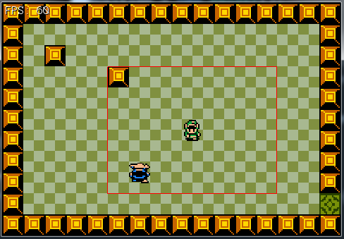

Scrolling
So far out game has taken place inside of small rooms, we've discussed adding an overworld map where different screens are conneced trough hidden doors. This time let's make a proper overworld, one that scrolls!
Many RPG games like the early Final Fantasy or Fire Emblem games used overworld scrolling like this. Some early games like Super Mario also implemented scrolling.
There are two ways to approach scrolling. Move the world and shift the view. Lets take some time to talk about each method:
Move The World, like the name implies moves the entire world! In this method if you want to move the hero to the right you update the position of EVERYTHING, including the hero in the world to be moved the opposite direction of the hero (to the left), then move the hero to the right.
Because everything shifted left, but only the hero shifted right you get the illusion tha the hero is in the center and the world scrolls around him. As you can imagine this method will quickly fall appart with LARGE (Over 1000 tiles) game worlds becuase the cost of updating everything grows with each object added.
Shift the view: This method calulates how much offset the player would need to appear in the center of the screen. When it comes time to render anything (beit the player a tile or an enemy) that difference is subtracted from the visual position.
Note, only the visual position is changed, the world position and update logic remain in tact. This method is preferable because it doesn't break anything we've done so far, it's strictly visual.
Needless to say we are using the shift view method, which coincidentally is how a 3D camera works (Just with a z-dimension added)
Concept of a camera
This might be a bit confusing, but i'm going to try to explain the concept of a camera in a game. If it makes no sense, give me a call and we will talk about it. Don't worry, we're not making a camera class or anything, this is just to try to clear things up.
The way a camera works is kind of like in real life. We place a camera at a position in the world, then we see what the camera sees. The details of how this works are a bit more involved. In order to understand cameras we have to unserstand spaces.
World Space: World Space refers to all of the objects in their world position. For instance, when we put link at xPixel 90, yPixel 30, his world position is Point(90,30). Here is an image of all our game objects in world space:

Camera Space: Refered to as View Space if talking about 3D graphics, Camera Space if talking about 2D graphics. This is what your camera sees! Camera space is usually a subset of world space. Think of this as a shifted coordinate system. Think of it like this:
- Tile 0,1 is at position 0,1 in World Space
- The camera is located at positon 3, 2 in world space
- Relative to the camera, tile 0,1 is located at -3, -1
- Tile is located at -3,-1 in camera space
Why -3, -1? The camera has it's own reference point for where 0,0 is. This happens to be +3, +2 from world space. To go from world space to camera space, we must subtract the cameras world position -3, -2. From 0,1 if we take 3 away from the X and 2 away from the Y we are left with -3, -1.
That might sound complicated, but there is a simple formula to transform an object from world space to camera space:
Object Position In Camera Space = Object Position in World Space - Camera Position In World Space
This is what camera space for our game looks like (assuming a camera that is 8 tiles wide and 6 tiles tall):

The red square is camera space. Notice how the obstacle on the top left is at tile 5, 4 relative to the world, but at tile 0, 0 relative to the camera.... That's world space vs camera space! For us the camera is going to be centered around the character, it's position is tied to character position.
Screen Space, this is what actually appears on screen. Up until now we have seen the entire sceen! Really all Screen Space is just what you see on screen. For the most part we just want to see the bit of camera on screen. We want to chop off anything outside the camera view, and that's screen space. Here is a screenshot:

Implementation
Let's go ahead and actually implement scrolling. This should be pretty simple, much less complex than the theory that goes behind it.
The first thing to do is to make the map bigger. Go ahead and make room1 two, or maybe three times bigger. Running the game you will see that the screen resizes to fit your new room size. Go into the Initialization function of game and make the window size be only 8 by 6 tiles:
window.ClientSize = new Size(8 * tileSize, 6 * tileSize);
Cool, now you should be able to walk off screen. The rest of this section is rendering related. In Game.cs find your render function. The first thing we need to do is determine a world to camera space transformation. We want the camera's to be centered around link. That means we want it's upper left to be 120 pixels (4 tileSize) to the left and 90 pixels (3 tileSize) to the top. This will center link.
This world to camera transformation is going to be stored as a PointF. I'm going to call mine offsetPosition. Simply make a new PointF at the heros center and subtract half of the window width and height:
PointF offsetPosition = new PointF();
offsetPosition.X = hero.Position.X - (float)(4 * tileSize);
offsetPosition.Y = hero.Position.Y - (float)(3 * tileSize);
Now comes a bit of refactoring. Pass offsetPosition in to every render function that the Game's render function calls. Next track down each of these functions, and add a PointF offsetPosition argument to them. Some functions call Render on other objects, Like the Map object calls Render on both EnemyCharacter and Tile. Add the argument to each of these as well. Every render function should take a PointF offsetPosition as an argument!
Inside each render function offset the X and Y positions of what is being rendered by the offsetPosition being passed in (subtract the camera offset from the x and y of what would be rendered). For example, this is what the Render function of Character becomes.
public void Render(PointF offsetPosition) {
// This is where we would render in world space
Point renderPosition = new Point((int)Position.X, (int)Position.Y);
// Apply the camera offset, bring us to rendering in camera space
renderPosition.X -= (int)offsetPosition.X;
renderPosition.Y -= (int)offsetPosition.Y;
// Draw the character
TextureManager.Instance.Draw(Sprite, renderPosition, 1.0f, SpriteSources[currentSprite][currentFrame]);
}
Go ahead and implement this offsetting to every function. After adding this code to every render function run the game. Now the game should scroll around with link! This is scrolling in it's most basic form! If you have any questions, give me a call.
Optimization
There is one small optimization problem. Even tough we only see a small section of the map at a time ALL of it is rendered! Even the bits that are off-screen. You can confirm this by resizing the window, notice that ALL of the off-screen bits of the map are rendering here. This isn't an issue until we get HUGE maps, on the scale of thousands by thousands of tiles.
How can we optimize this? By rendering only what can be seen. This bit of code is going to go into the Map class, because after all the Map class is responsible for rendering tiles. Unfortunitaley, we don't have enough information to do this at the moment! We could make some assumptions and figure out the bounds of the render rect, but that's a lot of effort. We're just going to add function arguments.
Find the Render function of Map, add a new PointF argument, call it cameraCenter. Next, we need to make 4 integers inside the function, Camera Min and Max X and Y. We're going to figure out the minimum X and Y pixels that are visible on screen. This is a bit hard to explain, but you basically take the center point, subtract half of the tiles (plus one tile for good measure) and you have the min. Now convert these to tile coordinates. Do the opposite for max. Here is how i did it in my code:
public void Render(PointF offsetPosition, PointF cameraCenter) {
// Find the visible corners of the screen in pixel position
int minX = (int)cameraCenter.X - 4 * 30 - 30;
int minY = (int)cameraCenter.Y - 3 * 30 - 30;
int maxX = (int)cameraCenter.X + 4 * 30 + 30;
int maxY = (int)cameraCenter.Y + 3 * 30 + 30;
// Convert visible corners to tile indexes
minX /= 30;
minY /= 30;
maxX /= 30;
maxY /= 30;
Finally, right under this bit of code is nested a for loop. This for loop goes trough all the tiles and render them. Change this loop so instead of looping from 0 to the number of rows or columns it loops from Min to Max. It's worth noting that Min and MAx might be out of bounds, so be sure to add bounds checks. Here is what mine looks like:
for (int h = minY; h < maxY; h++) {
for (int w = minX; w < maxX; w++) {
// Lower bounds check
if (h < 0 || w < 0) {
continue;
}
// Upper bounds check
if (h >= tileMap.Length || w >= tileMap[h].Length) {
continue;
}
tileMap[h][w].Render(offsetPosition);
}
}
Thats it! Now we're only rendering what is visible on screen! Want to confirm it? Resize your window! Make it larger and take not how only the area which is visible is being rendered. And that's it. We're done with basic scrolling.